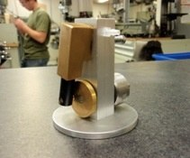

Machined pneumatic air motor
ME 12S · First-year machine shop
Fabricated and assembled a compressed-air motor from multiple materials using traditional machine-shop equipment. This project introduced me to machining processes, part fit, and hands-on assembly.
Manufacturing · Machining · Assembly